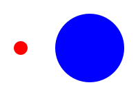
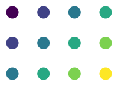
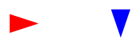
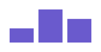

Batches¶
Many similar shapes made, transformed and written as numpy columns; see the
Performance and batches guide. The module is available as svg.batch.
Batches: thousands of similar shapes made, moved, styled and written as numpy columns.
Each factory takes scalars or arrays that broadcast together (numpy rules) and returns a
Batch, a <g> whose items are ordinary SVG elements in the output. While compact, the
batch stores one column per attribute, so making, transforming, restyling and writing 100,000
items costs a few numpy operations instead of 100,000 Python objects. batch[i], iteration and
batch.animate turn the items into real elements when they are needed one by one.
Examples
>>> import numpy as np
>>> import svgwriter as svg
>>> rng = np.random.default_rng(1)
>>> x, y = rng.normal(50, 15, (2, 1000))
>>> doc = svg.Document(100, 100)
>>> dots = doc.add(svg.batch.points(x, y, 1.5, fill=svg.batch.colormap("plasma", y), opacity=0.7))
>>> _ = dots.rotate(rng.uniform(0, 90, 1000)).translate(0, 2)
>>> doc.to_string().count("<circle")
1000
- class Batch(*args: Child, transform: TransformLike | None = None, anchor: Pivot | None = None, fill: PaintValue = None, fill_opacity: Opacity | None = None, fill_rule: FillRule | None = None, stroke: PaintValue = None, stroke_width: LengthLike | None = None, stroke_opacity: Opacity | None = None, stroke_linecap: LineCap | None = None, stroke_linejoin: LineJoin | None = None, stroke_miterlimit: float | None = None, stroke_dasharray: Sequence[float] | str | None = None, stroke_dashoffset: LengthLike | None = None, opacity: Opacity | None = None, display: str | None = None, visibility: str | None = None, color: str | None = None, clip_path: str | Element | None = None, mask: str | Element | None = None, filter: str | Element | None = None, font_family: str | None = None, font_size: LengthLike | None = None, font_weight: str | int | None = None, text_anchor: str | None = None, alignment_baseline: str | None = None, baseline_shift: LengthLike | str | None = None, clip: str | None = None, clip_rule: FillRule | None = None, color_interpolation: str | None = None, color_interpolation_filters: str | None = None, color_profile: str | None = None, color_rendering: str | None = None, direction: str | None = None, dominant_baseline: str | None = None, enable_background: str | None = None, flood_color: Color | str | None = None, flood_opacity: Opacity | None = None, font: Typeface | str | None = None, font_size_adjust: float | str | None = None, font_stretch: str | None = None, font_style: str | None = None, font_variant: str | None = None, glyph_orientation_horizontal: float | str | None = None, glyph_orientation_vertical: float | str | None = None, image_rendering: str | None = None, kerning: LengthLike | str | None = None, letter_spacing: LengthLike | str | None = None, lighting_color: Color | str | None = None, marker: str | Element | None = None, marker_end: str | Element | None = None, marker_mid: str | Element | None = None, marker_start: str | Element | None = None, overflow: str | None = None, pointer_events: str | None = None, shape_rendering: str | None = None, stop_color: Color | str | None = None, stop_opacity: Opacity | None = None, text_decoration: TextDecoration | str | None = None, text_rendering: str | None = None, unicode_bidi: str | None = None, word_spacing: LengthLike | str | None = None, writing_mode: str | None = None, class_: str | Sequence[str] | None = None, style: StyleLike | None = None, required_features: str | Sequence[str] | None = None, required_extensions: str | Sequence[str] | None = None, system_language: str | Sequence[str] | None = None, external_resources_required: bool | None = None, xml_base: str | None = None, xml_lang: str | None = None, xml_space: XmlSpace | None = None, id: str | None = None, attrs: Mapping[str, AttrValue] | None = None, **kwargs: Any)[source]¶
Bases:
ItemTransforms,ItemMeasures,GroupA
<g>of many similar items (circles, rects, lines, polylines, texts or instances).Made by
circles()and the other factories ofsvgwriter.batch. While compact the items live as numpy columns: building, transforming (translate(),rotate(),scale()), restyling (set()) and writing them are vectorized, and the output is one ordinary SVG element per item. Reading an item (batch[i], iteration,items) or animating items (animate) expands the batch: the items become real child elements, edited like any other, and the batch methods keep working on them one by one.Values given once for every item go on the
<g>when they are inherited (fill,stroke,font-size…) and on each item otherwise (opacity). Style the whole batch through the<g>:batch.as_role("dot"),batch.matrix,batch.id.See also
svgwriter.model.batch.circlesMake a batch of circles.
Notes
Exporters that draw shape by shape (PDF, PowerPoint, TikZ, …) expand a copy; the raster renderer draws compact batches directly. Style sheet rules that select items individually (
circle { ... }) style expanded items only.Examples
>>> import numpy as np >>> import svgwriter as svg >>> dots = svg.batch.circles(np.arange(3) * 10, 5, 2, fill="teal") >>> print(dots.to_string(pretty=False, xml_declaration=False)) <g fill="teal"><circle cx="0" cy="5" r="2"/><circle cx="10" cy="5" r="2"/><circle cx="20" cy="5" r="2"/></g> >>> len(dots), dots.compact (3, True) >>> dots[1].r = 4 >>> dots.compact, dots[1].r (False, 4.0)
- property compact: bool¶
Whether the items are still columns (True) or real child elements (False).
Examples
>>> import svgwriter as svg >>> svg.batch.circles([1, 2], 0, 1).compact True
- property item_type: type[Element]¶
The element class of every item (
svg.Circlefor circles and dots,svg.Usefor instances).Examples
>>> import svgwriter as svg >>> svg.batch.points([1, 2], 0).item_type.__name__ 'Circle'
- property shape: Element | None¶
The element an instance batch repeats (in the batch’s
<defs>); None for other batches.Examples
>>> import svgwriter as svg >>> svg.batch.instances(svg.rect(0, 0, 4, 4), [0, 10], 0).shape.tag 'rect'
- property items: list[Element]¶
The items as elements, expanding the batch first.
- Returns:
list of Element – One child per item, in drawing order.
Examples
>>> import svgwriter as svg >>> [item.tag for item in svg.batch.lines(0, 0, [5, 10], 5).items] ['line', 'line']
- expand() Self[source]¶
Turn the columns into one real child element per item and return the batch.
Expanding is one-way and happens by itself on
batch[i], iteration,itemsandanimate; afterwards every method works item by item.- Returns:
Batch – This batch.
Examples
>>> import svgwriter as svg >>> dots = svg.batch.circles([1, 2], 0, 1).expand() >>> dots.compact, [child.tag for child in dots.children] (False, ['circle', 'circle'])
- property animate: BatchMotion¶
batch.animate.fade_in(1, stagger=0.01).Expands the batch. Array arguments with one value per item go to their own item.
- Returns:
BatchMotion – Every
Element.animatepreset.
Examples
>>> import svgwriter as svg >>> dots = svg.batch.circles([0, 10, 20], 0, 2) >>> _ = dots.animate.fade_in(0.5, stagger=0.1) >>> [item.children[0].get("begin") for item in dots] ['0s', '0.1s', '0.2s']
- Type:
Animation presets applied to every item, optionally staggered
- column(name: str) ndarray[source]¶
Every item’s value of attribute name (Python or SVG spelling), or
"transform"as(N, 6).- Parameters:
name (str) – The attribute.
- Returns:
numpy.ndarray – One value per item (read-only while compact); items without the attribute give None.
Examples
>>> import svgwriter as svg >>> svg.batch.circles([1, 2], 0, [3, 4]).column("r").tolist() [3.0, 4.0]
- set(name: str | None = None, value: Any = None, **attributes: Any) Self[source]¶
Set attributes on every item; arrays give each item its own value. Returns the batch.
- Parameters:
name (str and object, optional) – One attribute by name, as
Element.settakes it.value (str and object, optional) – One attribute by name, as
Element.settakes it.**attributes – Attributes in Python spelling: scalars apply to every item (inherited ones go on the
<g>), arrays and colour lists broadcast over the items,Noneremoves.
- Returns:
Batch – This batch.
- Raises:
ValueError – If an array does not broadcast to one value per item.
Examples
>>> import svgwriter as svg >>> dots = svg.batch.circles([0, 10], 0, 2).set(fill=["red", "blue"], r=[1, 5]) >>> dots.column("fill").tolist(), dots.column("r").tolist() (['#ff0000', '#0000ff'], [1.0, 5.0])

- item_markup(precision: int = 4) list[str][source]¶
Each item of a compact batch as SVG text, as the writer puts it inside the
<g>.- Parameters:
precision (int, optional) – Maximum decimals for numbers. Defaults to 4.
- Returns:
list of str – One element per item; empty once the batch has expanded.
Examples
>>> import svgwriter as svg >>> svg.batch.rects([0, 5], 0, 4, 2.5).item_markup() ['<rect x="0" y="0" width="4" height="2.5"/>', '<rect x="5" y="0" width="4" height="2.5"/>']
- property item_attributes: list[str]¶
SVG names of the attributes a compact batch writes on every item (empty once expanded).
Examples
>>> import svgwriter as svg >>> svg.batch.circles([1, 2], 0, 1, opacity=[0.5, 1]).item_attributes ['cx', 'cy', 'r', 'opacity']
- clone(linked: bool = False) Any[source]¶
A deep copy that shares the read-only columns; see
Element.clone.Examples
>>> import svgwriter as svg >>> dots = svg.batch.circles([1, 2], 0, 1) >>> copy = dots.clone().translate(5) >>> dots.column("transform")[0, 4].item(), copy.column("transform")[0, 4].item() (0.0, 5.0)

- class BatchMotion(batch: Batch)[source]¶
Bases:
objectbatch.animate: each preset runs on every item, each item starting stagger seconds after the last.Every preset of
Element.animateis available with its own arguments plusstagger(seconds, default 0). Array arguments with one entry per item (beginincluded) give each item its own value; anything else is shared.- Parameters:
batch (Batch) – The batch to animate; it is expanded.
Examples
>>> import numpy as np >>> import svgwriter as svg >>> dots = svg.batch.circles([0, 10], 0, 2) >>> _ = dots.animate.move_to(np.array([5, 15]), 20, dur=1) >>> len(dots[0].children), len(dots[1].children) (1, 1)
- batch¶
- circles(cx: ArrayLike, cy: ArrayLike, r: ArrayLike = 1.0, *, fill: Any = None, stroke: Any = None, opacity: ArrayLike | None = None, **attributes: Any) Batch[source]¶
Many circles at once; every argument is a scalar or an array, broadcast with numpy rules.
- Parameters:
cx (float or array_like) – Centres.
cy (float or array_like) – Centres.
r (float or array_like, optional) – Radii. Defaults to 1.
fill (paint, list of colours or array, optional) – One paint for all, a list of colours, an
(N, 3|4)RGB(A) array (0..1floats or0..255integers; alpha becomesfill-opacity) or acolormap(). Default to None.stroke (paint, list of colours or array, optional) – One paint for all, a list of colours, an
(N, 3|4)RGB(A) array (0..1floats or0..255integers; alpha becomesfill-opacity) or acolormap(). Default to None.opacity (float or array_like, optional) – Opacity of each item. Defaults to None.
**attributes – Any other SVG attribute in Python spelling, shared or one value per item.
- Returns:
Batch – A compact batch of
<circle>items.- Raises:
ValueError – If the arguments do not broadcast together.
TypeError – If a keyword is not an SVG attribute.
See also
pointsDots of a given size.
Examples
>>> import numpy as np >>> import svgwriter as svg >>> x, y = np.meshgrid(np.arange(4) * 10, np.arange(3) * 10) >>> grid = svg.batch.circles(x, y, 2, fill=svg.batch.colormap("viridis", x + y)) >>> len(grid), grid.column("fill")[0] (12, '#440154')

- colormap(name: str, values: Any, *, vmin: float | None = None, vmax: float | None = None) ndarray[source]¶
Colours for values from a perceptual colormap, as an
(..., 3)RGB array in0..1.Pass the result as
fillorstrokeof a batch; each item gets its own colour.- Parameters:
name (str) – A colormap:
"viridis","plasma","inferno","magma","cividis","turbo"or"grays".values (array_like) – The data to colour, any shape.
vmin (float, optional) – Values mapped to the ends of the map; values outside are clipped. Default to the smallest and largest of values.
vmax (float, optional) – Values mapped to the ends of the map; values outside are clipped. Default to the smallest and largest of values.
- Returns:
numpy.ndarray –
values.shape + (3,)RGB in0..1.- Raises:
ValueError – If name is not a built-in colormap.
See also
colormapsThe available names.
Examples
>>> import svgwriter as svg >>> svg.batch.colormap("viridis", [0, 1]).round(3).tolist() [[0.267, 0.004, 0.329], [0.992, 0.906, 0.145]] >>> dots = svg.batch.circles([0, 10, 20], 0, 2, fill=svg.batch.colormap("grays", [0, 5, 10])) >>> dots.column("fill").tolist() ['#000000', '#808080', '#ffffff']
- colormaps() list[str][source]¶
Names of the built-in colormaps.
- Returns:
list of str – The names
colormap()accepts, sorted.
Examples
>>> import svgwriter as svg >>> "viridis" in svg.batch.colormaps() True
- instances(shape: Element, x: ArrayLike, y: ArrayLike, *, angle: ArrayLike = 0.0, scale: ArrayLike = 1.0, fill: Any = None, opacity: ArrayLike | None = None, **attributes: Any) Batch[source]¶
Copies of any element, each placed, turned and scaled on its own, written as
<use>.The element is copied once into the batch’s
<defs>; each instance puts the element’s anchor (its centre unless set) at(x, y).- Parameters:
shape (Element) – What to repeat: a shape, a group, a text…
x (float or array_like) – Where each copy’s anchor goes.
y (float or array_like) – Where each copy’s anchor goes.
angle (float or array_like, optional) – Rotation of each copy in degrees, clockwise on screen. Defaults to 0.
scale (float or array_like, optional) – Uniform scale of each copy. Defaults to 1.
fill (paint, list of colours or array, optional) – As for
circles(); it shows where the shape leavesfillunset. Defaults to None.opacity (float or array_like, optional) – Opacity of each copy. Defaults to None.
**attributes – Any other SVG attribute in Python spelling.
- Returns:
Batch – A compact batch of
<use>items.
Examples
>>> import svgwriter as svg >>> arrow = svg.polygon([(0, -2), (6, 0), (0, 2)]) >>> field = svg.batch.instances(arrow, [10, 30], 10, angle=[0, 90], fill=["red", "blue"]) >>> field.item_markup()[1].replace(field.shape.id, "arrow") '<use xlink:href="#arrow" fill="#0000ff" transform="matrix(0 1 -1 0 30 7)"/>'

- lines(x1: ArrayLike, y1: ArrayLike, x2: ArrayLike, y2: ArrayLike, *, stroke: Any = None, opacity: ArrayLike | None = None, **attributes: Any) Batch[source]¶
Many line segments at once, broadcast as in
circles().- Parameters:
x1 (float or array_like) – End points.
y1 (float or array_like) – End points.
x2 (float or array_like) – End points.
y2 (float or array_like) – End points.
stroke (paint, list of colours or array, optional) – As for
circles(). Defaults to None.opacity (float or array_like, optional) – Opacity of each item. Defaults to None.
**attributes – Any other SVG attribute in Python spelling (
stroke_widtharrays included).
- Returns:
Batch – A compact batch of
<line>items.
Examples
>>> import numpy as np >>> import svgwriter as svg >>> angles = np.linspace(0, np.pi, 5) >>> rays = svg.batch.lines(0, 0, 10 * np.cos(angles), 10 * np.sin(angles), stroke="black") >>> len(rays) 5
- points(x: ArrayLike, y: ArrayLike, size: ArrayLike = 2.0, *, fill: Any = None, opacity: ArrayLike | None = None, **attributes: Any) Batch[source]¶
Dots: circles of diameter size at
(x, y), for scatter plots and particles.- Parameters:
x (float or array_like) – Positions.
y (float or array_like) – Positions.
size (float or array_like, optional) – Diameters. Defaults to 2.
fill (paint, list of colours or array, optional) – As for
circles(). Defaults to None.opacity (float or array_like, optional) – Opacity of each dot. Defaults to None.
**attributes – Any other SVG attribute in Python spelling.
- Returns:
Batch – A compact batch of
<circle>items.
Examples
>>> import svgwriter as svg >>> svg.batch.points([0, 5], [1, 2], 3).item_markup() ['<circle cx="0" cy="1" r="1.5"/>', '<circle cx="5" cy="2" r="1.5"/>']
- polylines(points: Any, *, closed: bool = False, fill: Any = None, stroke: Any = None, opacity: ArrayLike | None = None, **attributes: Any) Batch[source]¶
Many polylines (or, closed, polygons) with any number of vertices each.
- Parameters:
points (array_like or sequence of array_like) – An
(N, K, 2)array, or a list of(K_i, 2)vertex arrays of different lengths.closed (bool, optional) – Make
<polygon>items. Defaults to False.fill (paint, list of colours or array, optional) – As for
circles(). Default to None.stroke (paint, list of colours or array, optional) – As for
circles(). Default to None.opacity (float or array_like, optional) – Opacity of each item. Defaults to None.
**attributes – Any other SVG attribute in Python spelling, shared or one value per item.
- Returns:
Batch – A compact batch of
<polyline>or<polygon>items.- Raises:
ValueError – If an item has no vertices or a vertex is not an
(x, y)pair.
Examples
>>> import svgwriter as svg >>> marks = svg.batch.polylines([[(0, 0), (5, 5)], [(0, 5), (2, 0), (4, 5)]], stroke="black", fill="none") >>> marks.item_markup() ['<polyline points="0,0 5,5"/>', '<polyline points="0,5 2,0 4,5"/>']
- rects(x: ArrayLike, y: ArrayLike, width: ArrayLike, height: ArrayLike, *, rx: ArrayLike | None = None, ry: ArrayLike | None = None, fill: Any = None, stroke: Any = None, opacity: ArrayLike | None = None, **attributes: Any) Batch[source]¶
Many rectangles at once, broadcast as in
circles().- Parameters:
x (float or array_like) – Top-left corners.
y (float or array_like) – Top-left corners.
width (float or array_like) – Sizes.
height (float or array_like) – Sizes.
rx (float or array_like, optional) – Corner radii. Default to None.
ry (float or array_like, optional) – Corner radii. Default to None.
fill (paint, list of colours or array, optional) – As for
circles(). Default to None.stroke (paint, list of colours or array, optional) – As for
circles(). Default to None.opacity (float or array_like, optional) – Opacity of each item. Defaults to None.
**attributes – Any other SVG attribute in Python spelling.
- Returns:
Batch – A compact batch of
<rect>items.
Examples
>>> import numpy as np >>> import svgwriter as svg >>> heights = np.array([3, 7, 5]) >>> bars = svg.batch.rects(np.arange(3) * 6, 10 - heights, 5, heights, fill="slateblue") >>> bars.bounds() BBox(x=0.0, y=3.0, width=17.0, height=7.0)

- texts(text: Any, x: ArrayLike, y: ArrayLike, *, fill: Any = None, opacity: ArrayLike | None = None, **attributes: Any) Batch[source]¶
Many short texts at once, broadcast as in
circles()(the strings too).- Parameters:
x (float or array_like) – Positions of each text’s anchor point on its baseline.
y (float or array_like) – Positions of each text’s anchor point on its baseline.
fill (paint, list of colours or array, optional) – As for
circles(). Defaults to None.opacity (float or array_like, optional) – Opacity of each item. Defaults to None.
**attributes – Any other SVG attribute in Python spelling (
font_size,text_anchor…).
- Returns:
Batch – A compact batch of
<text>items.
Examples
>>> import svgwriter as svg >>> labels = svg.batch.texts(["a", "b<c"], [0, 20], 10, font_size=8) >>> print(labels.to_string(pretty=False, xml_declaration=False)) <g font-size="8"><text x="0" y="10">a</text><text x="20" y="10">b<c</text></g>